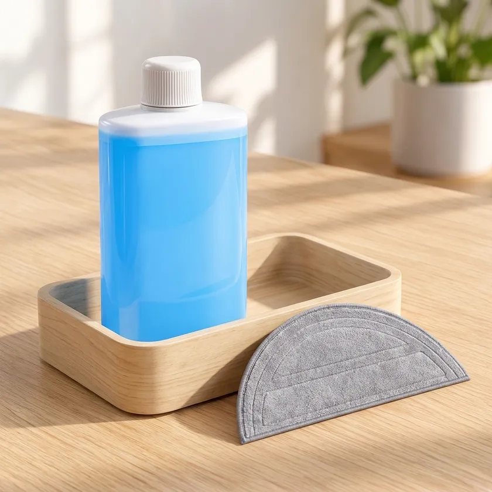

로보락 (Roborock)
도크 자동 세제통 정량 리필을 위한 로보락 정품 클리너 1L 1병·2병 선택 기준
글·구성: 제이상점 · 기종별 1:1 호환 실물 점검 · 교체 주기 비교표 · 스마트스토어 패키지 안내

핵심 관리 · 선택 체크포인트
- 고기나 생선을 구운 뒤 주방 바닥에 남은 미세한 기름막은 맹물 걸레질만으로는 뽀득하게 닦이지 않는 경우가 많습니다.
- 주방·거실 저녁 물걸레 예약 전 정량 투입과 거품 방지 원칙: 바닥 기름기를 닦겠다고 세정제를 권장 비율보다
- 로보락 정품 클리너 1L 옵션 비교 및 보관·사용 체크표: 물걸레 세척 빈도와 싱크대 하부장 수납 공간에 맞춰 1병 또는 2병 묶음을 선택해 보세요.
- 직사각형 슬림 용기 디자인이라 싱크대 하부장 슬라이딩 선반에 2병을 나란히 세워 두기에도 좋습니다.
- 주방 청소 후 물걸레 패드 통풍 건조와 하부장 슬라이딩 수납: 주방 바닥을 닦은 반원형·원형 물걸레 패드는 기름기와 습기가 남지 않도록 세척 후 통풍 선반에서 바짝 말려 교대 장착하면 냄새 걱정을 덜 수 있습니다.
실물 부품 디테일 · 관리 구성 이미지



부품 규격 · 점검 기준표
| 옵션 구분 | 구성 및 특징 | 추천 사용 환경 |
|---|---|---|
| 용량 1L-1병 | 로보락 정품 전용 세정제 1L 1병 | 정량 투입 루틴을 시작하며 도크 옆에 한 병씩 두고 쓸 때 |
| 용량 1L-2병(복수구매할인) | 로보락 정품 전용 세정제 1L 2병 묶음 | 주방·거실 물걸레 청소를 매일 돌려 예비 병을 할인 구비할 때 |
| 카트리지·물통 관리 | 자동 투입 카트리지 또는 정수통 희석 | 리필 전 카트리지 입구의 굳은 세제 자국을 젖은 천으로 정리 |
💡 교체 주기가 겹치는 필터·브러시·물걸레·더스트백은 단품 배송비를 여러 번 내기보다 로보락 세제 기간별 세트(3개월·6개월·1년)로 미리 구비해 두면 물세척 후 24시간 교대 건조까지 끊김 없이 관리할 수 있습니다.
자주 묻는 질문 (FAQ)
Q. 도크 자동 세제통 정량의 용량 1L-1병 규격과 관리 기준은 무엇인가요?
A. 로보락 정품 전용 세정제 1L 1병 규격을 사용하며, 정량 투입 루틴을 시작하며 도크 옆에 한 병씩 두고 쓸 때 기준으로 점검·교체하면 청소 효율을 안정적으로 유지할 수 있습니다.
Q. 도크 자동 세제통 정량의 용량 1L-2병(복수구매할인) 규격과 관리 기준은 무엇인가요?
A. 로보락 정품 전용 세정제 1L 2병 묶음 규격을 사용하며, 주방·거실 물걸레 청소를 매일 돌려 예비 병을 할인 구비할 때 기준으로 점검·교체하면 청소 효율을 안정적으로 유지할 수 있습니다.
Q. 도크 자동 세제통 정량의 카트리지·물통 관리 규격과 관리 기준은 무엇인가요?
A. 자동 투입 카트리지 또는 정수통 희석 규격을 사용하며, 리필 전 카트리지 입구의 굳은 세제 자국을 젖은 천으로 정리 기준으로 점검·교체하면 청소 효율을 안정적으로 유지할 수 있습니다.
제이상점 1:1 검수 추천 패키지 · 구매 안내
![[호환] 로보락 S10 MaxV Ultra 소모품 전용 세제 물걸레 더스트백 1년 세트](../../assets/img/s10-product-bce69e90.webp)
함께 많이 찾는 보충 구성
대표 구성 참고가 70,100원대 (옵션·쿠폰별 스마트스토어 결제 화면 기준)
1년세트1년세트｜호환세제→정품세제 업그레이드6개월세트6개월세트｜호환세제→정품세제 업그레이드3개월세트
☑️ 주문 전 확인해 두면 좋은 제이상점 안심 포인트
· 기종별 1:1 전용 규격 검수: 모델명·연식에 맞는 호환·정품 구성을 검수해 오주문 불안을 줄였습니다.
· 해외직배송 미리 주문 팁: 중국 구매대행·해외직배송 상품이므로 마지막 여분 1개를 꺼내 쓰는 시점에 개인통관고유부호와 함께 여유 있게 주문해 두시면 훨씬 경제적인 비용으로 끊김 없이 교체하실 수 있습니다.
· 기종별 1:1 전용 규격 검수: 모델명·연식에 맞는 호환·정품 구성을 검수해 오주문 불안을 줄였습니다.
· 해외직배송 미리 주문 팁: 중국 구매대행·해외직배송 상품이므로 마지막 여분 1개를 꺼내 쓰는 시점에 개인통관고유부호와 함께 여유 있게 주문해 두시면 훨씬 경제적인 비용으로 끊김 없이 교체하실 수 있습니다.
📖 더 많은 가정 내 사용 스토리와 상세 후기가 궁금하시다면
📱 네이버 블로그 모바일 원문 보기 ↗